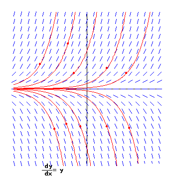
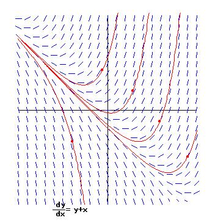
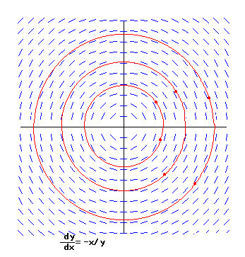
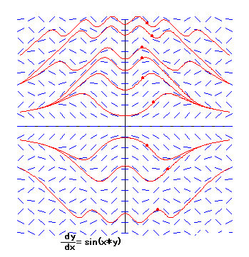

|
First-order differential Equation can be expressed in the form
dy/dx = f(x,y).
The solution of the differential equation are certain functions. The differential equation defines the slope of at the point (x,y) of the certain curve of the function that passes through this point. For each point (x,y), the differential equation defines a line segment with slope f(x,y). We say that the differential equation defines the direction field of the differential equation. |
|
Click on the screen to draw graphs. |
|  |  |
|  |  |